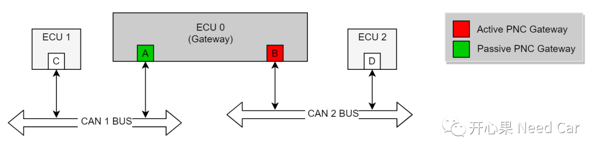
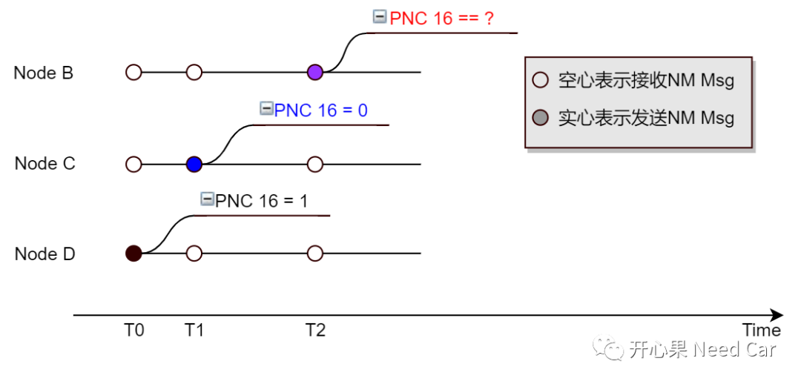
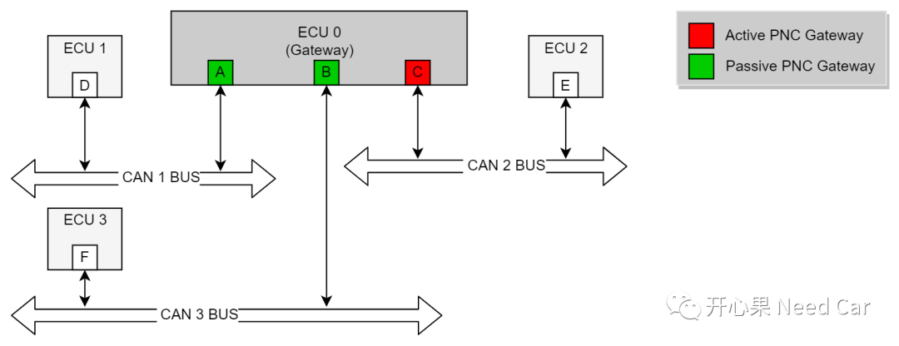
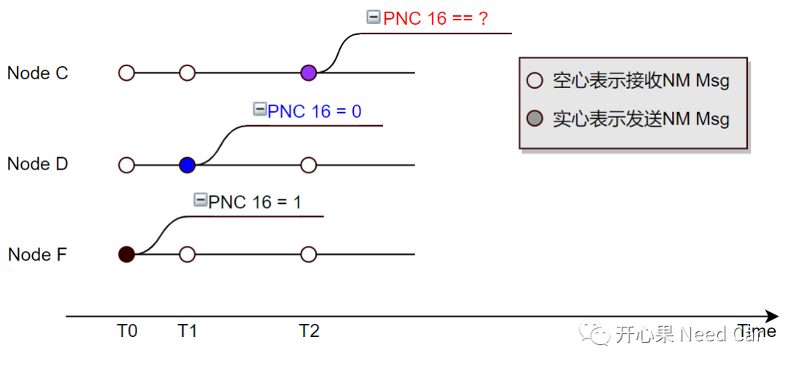
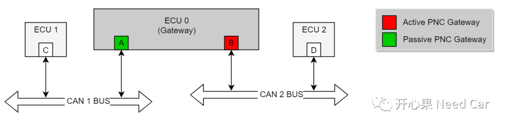
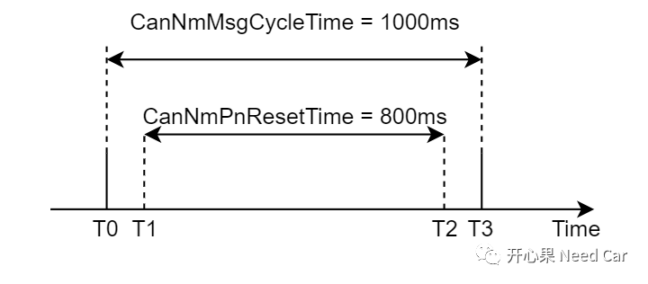
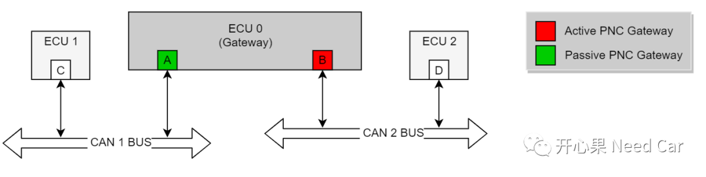
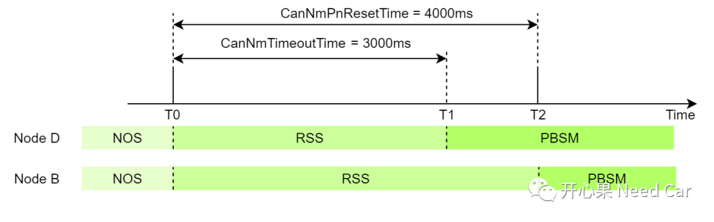

开心果 Need Car · 2022-09-18T13:44:00+08:00 · 微信原文
本文讨论Autosar局部网络管理（Partial Network）的一个问题：“对于网关（Gateway）节点，Channel A收到PNC #n = 0，可以路由到Channel B吗？（假设Channel B的PNC Gateway Type = Active）”，在给出答案之前，先假设几个工况。
工况一
某个网络拓扑如下所示：

网关节点（ECU 0）包含两个Node：Node A、Node B，其中Node A的PNC Gateway Type = Passive，Node B的PNC Gateway Type = Active。ECU 1包含Node C，ECU2包含Node D。其中：Node B关联PNC 16，即：Node B收到PNC 16 = 1的网络管理报文，发送的网络管理报文中，PNC 16置位（=1）。
如下工况：

T0时刻，Node D发送的NM Msg中，PNC 16 = 1;
T1时刻，Node C发送的NM Msg中，PNC 16 = 0，Node A接收到PNC 16 = 0;
T2时刻，假设Node A可以将PNC 16 = 0路由给Node B，则Node B此时发送的NM Msg中，PNC 16应该等于多少？
如上，Node C和Node D分属不同的网段，两者发送NM Msg的时机存在不确定性，因此T0与T1之间的间隔不确定。如果Node B接收到Node D NM Msg(PNC 16 = 1)之后，同时又收到了Node A路由过来的PNC 16 = 0，可能使得Node B最终收到的PNC 16 = 0，当Node B发送NM Msg时，PNC 16可能一直等于0，如果Node D收到的PNC 16 = 0，则Node D关联PNC 16的应用报文均不会处理（这里的不处理包括接收和发送）。
因此，网关节点收到的NM Msg中，PNC 16 = 0时，不可以路由到其他节点（或者说网段）。
工况二
假设，某网络拓扑如下所示：

网关节点ECU 0包含三个Node：Node A、Node B、Node C，其中，Node A和Node B的PNC Gateway Type = Passive，Node C的PNC Gateway Type = Active。ECU 1包含Node D，ECU 2包含Node E，ECU 3包含Node F。
工况如下：

T0时刻，Node F发送的NM Msg中，PNC 16 = 1，通过Node B路由给Node C；
T1时刻，Node D发送的NM Msg中，PNC 16 = 0（假设PNC = 0可以路由），通过Node A路由给Node C；
T2时刻，Node C发送的NM Msg中，PNC 16 = ？
显然，此工况造成的问题同工况一，不再赘述。因此，网关节点收到NM Msg中，PNC = 0时，不可以路由到其他网段。
因此，对于网关节点项目，PN网络管理中，只能路由PNC = 1的信息，这点类似COM模块的信号（Signal）路由，只有接收的UB（Update Bit）信号有效，接收的Signal才能路由。对于UB的理解，可以参考前文工程开发问题（五）：UB(Update-Bits)、UD(Update Deadline)的需求理解及实现。
既然收到的NM Msg中，PNC #n = 0不能路由，那么路由的PNC #n = 1何时复位（ = 0）呢？答：CanNmPnResetTime超时。CanNmPnResetTime设置多少合适呢？答：CanNmMsgCycleTime＜CanNmPnResetTime ＜CanNmTimeoutTime。
假设：项目需求中，要求CanNmMsgCycleTime = 1s，CanNmTimeoutTime = 3s。则1s＜CanNmPnResetTime ＜3s，其中，常见的需求中：CanNmPnResetTime = 2.95s。
为什么CanNmMsgCycleTime＜CanNmPnResetTime ＜CanNmTimeoutTime ？
（一）为什么CanNmMsgCycleTime＜CanNmPnResetTime？
假设：CanNmPnResetTime = 800ms，CanNmMsgCycleTime = 1000ms。
网络拓扑如下：


T0时刻，Node B发送的NM Msg中，PNC 16 = 0；
T1时刻，Node C发送的NM Msg中，PNC 16 = 1，通过Node A路由给Node B，对应的PNC 16 Bit置位（ = 1）;
T2时刻， CanNmPnResetTime(800ms)超时，对应的PNC 16 Bit复位（ = 0）；
T3时刻，Node B再次发送NM Msg时，PNC 16 = 0，导致Node D不发送Message A。
（二）CanNmPnResetTime ＜CanNmTimeoutTime？

CAN 2总线上的Node B和Node D网络状态如下所示：

T0时刻，Node A路由PNC 16 =1给Node B，Node B发送一帧NM Msg，Node B、Node D的CanNmTimeoutTime均重置为3s，并且Node B、Node D同时释放网络，进入RSS（Ready Sleep State）状态，两者均不发送网络管理报文；
T1时刻，由于Node D的CanNmTimeoutTime超时，Node D进入PBSM（Prepare Bus-Sleep Mode）模式，同时停发应用报文；
由于CanNmPnResetTime = 4000ms，Node B的PNC 16网络没有释放，导致Node B在T1~T2时间内，一直处于RSS状态，且PNC 16对应的应用报文一直外发，Node B的应用报文可能会导致网段的网络状态不稳定。同时，Node B无法协调同一网段内其他节点的网络状态。因此，需要CanNmPnResetTime ＜CanNmTimeoutTime。
往期精彩回顾